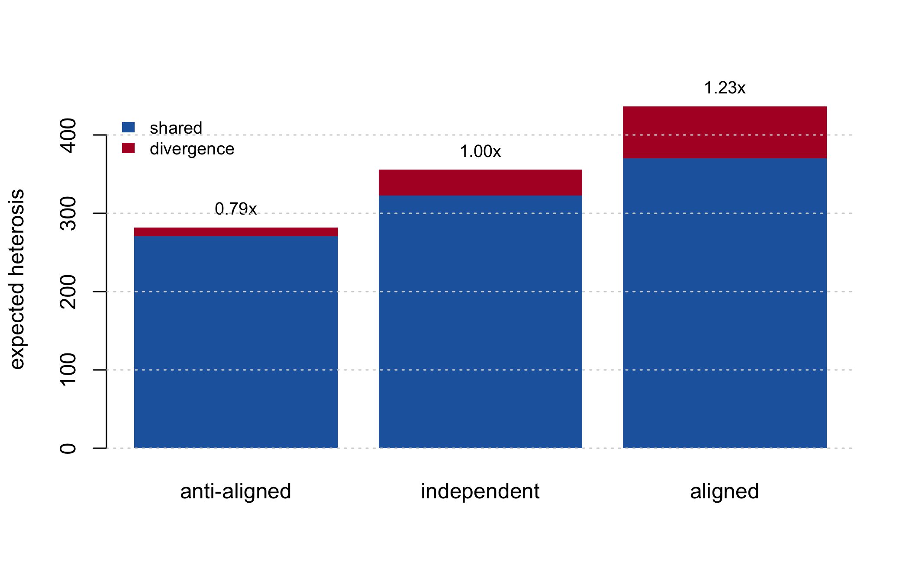
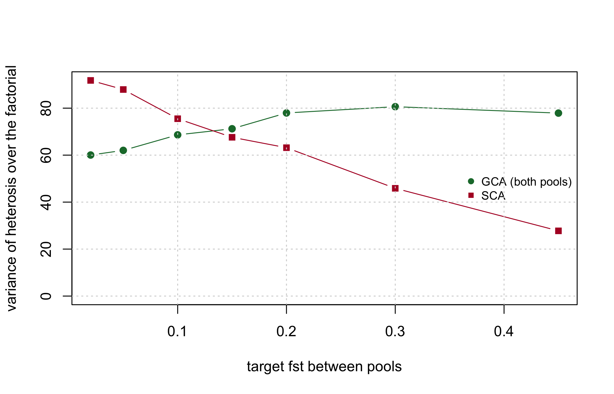

heterosis_value
#> function (X, d)
#> {
#> stopifnot(length(d) == ncol(X))
#> drop((X == 0.5) %*% d)
#> }
#> <bytecode: 0xa7c96e510>
#> <environment: namespace:hybdiv>10 Heterosis, dominance, and what divergence buys
Since Chapter 2 this book has repeated a claim without proving it: that the divergence between the heterotic pools is the engine of heterosis, and is therefore to be maintained rather than minimised. Chapter 11 will decompose diversity on that basis and Chapter 13 will build a monitoring panel around it. The claim has carried a lot of weight for an assertion.
This chapter derives it, and then corrects it. The derivation is short and the identity is exact. The correction is that the usual reading of the identity – push the pools apart and you will get more heterosis – is false: under neutral divergence expected heterosis does not move at all, and the simulation shows it.
The chapter then goes one step past the mean. Expected heterosis is what a pool pair is worth on average; what a breeder selects on is how heterosis is distributed across the crosses of the factorial. Those are different questions with different answers, and the second one is where general and specific combining ability come from.
Three premises carry everything below. They are stated here once, because every result in the chapter uses all three and two of them are restrictive.
Parents are fully inbred. Every parent line is homozygous at every locus, so an F1’s marker row is the average of its two parents’ rows and a locus is heterozygous in the F1 exactly when the parents differ. This is what makes the additive effects cancel from the mid-parent difference and what makes GD_WI zero. Nothing here transfers to a programme crossing non-inbred parents without re-derivation.
The genotypic model is dominance within loci and additivity between them. There is no epistatic term anywhere below: the genotypic value is a sum over loci, \(H_i\) is a sum of per-locus indicators, and the combining-ability expansion of Section 10.10 is bilinear only because no term couples two loci. Labroo et al. (2021) review epistasis alongside dominance as a proposed mechanism for heterosis; this model excludes it, and no result below should be read as evidence about it. What \(d_k\) does absorb is every within-locus story, as the next section sets out.
The marker panel is the set of dominance loci. \(d_k\) is indexed by the same \(k\) as the markers, so every locus carrying dominance is genotyped and the frequency statistics are computed on exactly the loci that generate heterosis. This is the strongest assumption of the three, and it is the one that carries the distance results of Section 10.6. A real panel tags causal loci through linkage disequilibrium rather than containing them, which weakens every statement below about markers predicting heterosis but does not change the algebra, since the algebra is written over whatever set \(k\) indexes.
10.1 The dominance model, minimally
10.1.1 The one-locus scale
The classical parameterisation puts the origin at the midpoint of the two homozygotes: one homozygote is worth \(+a\), the other \(-a\), and the heterozygote \(d\). Under random mating at frequency \(p\), with \(q = 1 - p\), the population mean is (Falconer and Mackay 1996, Eq. 7.2)
\[M = a\,(p - q) + 2pq\,d\]
The first term is the additive contribution, and the mid-parent of any cross already carries it. The second is the dominance contribution. It is the only part of \(M\) that depends on how many heterozygotes there are, and therefore the only part a cross can add over its own mid-parent.
Note\(a\) is a scale, not a quantity this chapter computes
The symbols in that display are the textbook ones. This book’s additive marker effects are \(\beta_k\) (Chapter 14), and its \(\alpha\) is the diversity-loss statistic of Chapter 11, not the classical average effect of a substitution. The per-locus \(a_k\) reappears three times below and never as a result: in the genotypic-value model used to show that it cancels, in the definition of overdominance as \(|d| > |a|\), and in the average effect of a substitution \(a + d(q - p)\). No quantity this chapter reports depends on it.
10.1.2 What \(d_k\) is, and what it is not
\(d_k\) is functional dominance: the departure of the heterozygote from the homozygote midpoint at locus \(k\). It is a property of the locus. It does not move when allele frequencies move.
Fisher’s statistical dominance deviation is a different object: the residual left after projecting genotypic values onto the best additive model in a particular population. It is a property of the population as much as of the locus, and it changes when frequencies change.
Both appear in this chapter, and keeping them apart is the whole trick. \(d_k\) is the input. The specific combining ability of Section 10.10 is the statistical dominance deviation that a given \(d_k\) induces over a given pair of pools. One is a constant; the other is an answer that depends on where the pools happen to sit.
The distinction also buys the model what generality it has, and marks where that generality stops. Dominance, overdominance (a heterozygote outside both homozygotes, \(|d| > |a|\)) and pseudo-overdominance (two dominant favourable alleles in repulsion phase, too close for any marker to separate) are three different biological stories, and Labroo et al. (2021) review the evidence for each. At marker resolution they are the same arithmetic: a locus at which the F1 gains something the mid-parent does not. A single \(d_k\) absorbs all three, and nothing below can distinguish them – nor needs to. Epistasis is the fourth story on Labroo et al. (2021)’s list and \(d_k\) does not absorb it, because a single per-locus number cannot represent a term that depends on two loci at once. That is the second premise above, and it is an exclusion rather than an approximation.
10.1.3 The mid-parent difference
Code a genotype by \(x_k \in \{0, 0.5, 1\}\), the frequency of the reference allele within the individual, and take the genotypic value to be the additive part plus the dominance deviation at every heterozygous locus:
\[G(\mathbf{x}) = \sum_k a_k\,(2x_k - 1) + \sum_k d_k\,\mathbb{1}\{x_k = 0.5\}\]
The parents are fully inbred, so each is homozygous at every locus and the F1’s row is the average of its two parents’ rows. The additive part is linear in \(\mathbf{x}\), so the two parents’ additive values average exactly to the F1’s own and cancel from the mid-parent difference. What survives is the dominance deviation at the loci where the F1 is heterozygous:
\[H_i = \sum_k d_k \, \mathbb{1}\{x_{ik} = 0.5\}\]
The additive effects never appear. That is the result, not an omission, and it is why heterosis_value() takes no additive-effect argument:
Against the literal oracle of Appendix C, which loops over loci and compares the two parents’ genotypes one at a time:
max(abs(heterosis_value(ctx$X[1:25, ], d) -
ref_heterosis(L, head(ctx$ped, 25), d)))
#> [1] 0The cancellation is worth seeing directly. Draw additive effects at random, score a real F1 and its two parents under \(G(\mathbf{x})\), and subtract:
a <- rnorm(ctx$m, 0, 0.2)
val <- function(x) sum(a * (2 * x - 1)) + sum(d * (x == 0.5))
i <- 7
mid <- (val(L[ctx$ped$a[i], ] / 2) + val(L[ctx$ped$b[i], ] / 2)) / 2
c(mid_parent_difference = val(ctx$X[i, ]) - mid,
heterosis_value = heterosis_value(ctx$X[i, , drop = FALSE], d))
#> mid_parent_difference heterosis_value
#> 362.3386 362.3386The additive effects entered the first number and cancelled out of it; they never entered the second.
10.2 Expected heterosis over a pool pair
Write \(p_{Ak}\) and \(p_{Bk}\) for the reference-allele frequencies at locus \(k\) in the two pools, each computed over that pool’s lines. A locus is heterozygous in the F1 when the two gametes carry different alleles, which for a cross drawn at random between the pools happens with probability \(p_A(1 - p_B) + (1 - p_A)p_B\). The expected heterosis over all \(A \times B\) crosses therefore follows from the pool frequencies alone:
\[\mathbb{E}[H] = \sum_k d_k \left[\, p_{A k} + p_{B k} - 2 p_{A k} p_{B k} \right]\]
The candidate pool here is the full factorial, every \(A \times B\) pairing exactly once, and the frequencies are the means of those same lines. The closed form is then the mean of the realised values as an identity rather than an approximation, and the residual is at machine precision:
abs(heterosis_expected(pA, pB, d) - mean(heterosis_value(ctx$X, d)))
#> [1] 1.136868e-13That is a mean over \(N =\) 625 crosses, and a mean is not a ranking. Hold on to the question of how the individual crosses are spread around it; Section 10.10 answers it exactly.
10.3 The identity
Now split the bracket. Writing \(\bar p = (p_A + p_B)/2\) and \(y = p_A - p_B\), the per-locus F1 heterozygosity separates exactly:
\[p_A + p_B - 2 p_A p_B \;=\; \underbrace{2 \bar p (1 - \bar p)}_{\text{shared}} \;+\; \underbrace{y^2 / 2}_{\text{divergence}}\]
The first term is the heterozygosity a single merged pool at frequency \(\bar p\) would produce under random mating. The second is what keeping the pools apart adds on top of it. Average both over loci with \(d_k \equiv 1\), so that the weighting does not obscure the algebra, and they are exactly the \(GD_T\) and \(GD_{BS}\) of the Caballero & Toro partition that Chapter 2 derived and gd_partition() computes:
hp <- heterosis_partition(pA, pB, rep(1, ctx$m)) / ctx$m
gp <- gd_partition(seq_len(ctx$N), ctx)
fmt(data.frame(term = c("shared", "divergence"),
heterosis = c(hp[["shared"]], hp[["divergence"]]),
partition = c(gp[["GD_T"]], gp[["GD_BS"]]),
residual = c(abs(hp[["shared"]] - gp[["GD_T"]]),
abs(hp[["divergence"]] - gp[["GD_BS"]]))), 12)| term | heterosis | partition | residual |
|---|---|---|---|
| shared | 0.3280928 | 0.3280928 | 0 |
| divergence | 0.0335968 | 0.0335968 | 0 |
\(GD_{BS}\) weighted by dominance deviations is the divergence half of expected heterosis. “Between-pool divergence is the heterosis engine” is an identity, not a slogan.
One thing to be clear about before reading on. \(GD_T\) is the gene diversity of the merged population, and by Chapter 2 it already contains \(GD_{BS}\): with inbred lines, \(GD_T = GD_{BI} + GD_{BS}\). Expected F1 heterozygosity is therefore \(GD_{BI} + 2\,GD_{BS}\), the between-pool component counted twice – once inside the shared term, once as the divergence term. That factor of two is where the classical result sits. Falconer & Mackay’s heterosis of a cross between two random-mating populations is \(\sum_k d_k y_k^2\) (Falconer and Mackay 1996, Ch. 14), exactly twice the divergence term here. The two do not conflict; they use different mid-parents. Theirs is two random-mating populations, each carrying its own within-pool heterozygosity, so their \(H\) is the total above \(\sum_k d_k (p_{Ak}q_{Ak} + p_{Bk}q_{Bk})\). Ours is two inbred lines carrying none, so the whole F1 heterozygosity is heterosis, and the shared term is the mean of the two pools’ random-mating heterozygosities plus the half of \(\sum_k d_k y_k^2\) that \(GD_T\) already holds.
10.3.1 A third form: one minus the between-pool coancestry
The sum of the two components has a name of its own. \(\theta_{AB} = \mathbf{w}_A' \mathbf{f}^L \mathbf{w}_B\) is the between-pool coancestry of Chapter 11: on the full factorial, where the line weights are uniform, it is the probability that an allele drawn from a pool-A line and an allele drawn from a pool-B line are identical in state. Its complement is the whole bracket:
\[GD_T + GD_{BS} \;=\; 1 - \theta_{AB}\]
tp <- theta_pools(seq_len(ctx$N), ctx)
c(shared_plus_divergence = gp[["GD_T"]] + gp[["GD_BS"]],
one_minus_theta_AB = 1 - tp[["theta_AB"]])
#> shared_plus_divergence one_minus_theta_AB
#> 0.3616896 0.3616896This one is algebra rather than simulation. gd_partition() defines \(GD_T = 1 - \bar f\) and \(GD_{BS} = \tilde f - \bar f\) with \(\bar f = (\theta_A + 2\theta_{AB} + \theta_B)/4\) and \(\tilde f = (\theta_A + \theta_B)/2\), and the sum collapses to \(1 - \theta_{AB}\). Which is the shortest statement the chapter has to make: expected F1 heterozygosity is one minus between-pool coancestry. Everything else here is a weighting of that quantity, or a way of splitting it.
10.4 A second identity, at the hybrid level
Chapter 11 reports GD_WI_hyb, the within-individual gene diversity actually carried by the F1s, separately from the line-level partition, because with inbred parents GD_WI is zero by construction and carries no signal. A hybrid’s self-coancestry is \(1 - h_i/2\), with \(h_i\) its heterozygous fraction, so GD_WI_hyb is half the mean F1 heterozygosity and the two levels are linked:
\[2 \cdot GD_{WI\text{-}hyb} = GD_T + GD_{BS}\]
c(lhs = 2 * gp[["GD_WI_hyb"]], rhs = gp[["GD_T"]] + gp[["GD_BS"]],
GD_WI = gp[["GD_WI"]])
#> lhs rhs GD_WI
#> 3.616896e-01 3.616896e-01 -4.440892e-16Exact on the full factorial, because every \(A \times B\) pairing is present exactly once. On a selected subset it holds only approximately. There \(GD_T\) and \(GD_{BS}\) are computed from the line-usage weights, which is what a random re-pairing of the selected parents would give, while GD_WI_hyb scores the pairs actually chosen. The gap is the pairing structure of the subset. tests/testthat/test-dominance.R asserts the identity to 1e-12 on the full factorial and bounds the gap at 5e-3 on a random 40-hybrid subset, at one scale (12 lines per pool, 800 markers). A subset chosen by an optimiser, which concentrates line usage deliberately, is not covered by that bound and has not been measured here.
10.5 Inbreeding depression, and why it does not price \(\alpha\)
The same model run backwards gives inbreeding depression. A locus at frequency \(p\) in a population with inbreeding coefficient \(F\) is heterozygous with probability \(2pq(1-F)\), so the mean declines linearly in \(F\) (Falconer and Mackay 1996, Ch. 14):
\[ID \;=\; 2F\sum_k d_k \, p_k q_k\]
At \(F = 1\) that is exactly the shared term of heterosis_partition() evaluated at \(p_A = p_B = p\). So the depression of a pool driven to complete homozygosity and the expected heterosis of a cross made within that same pool are one quantity seen from two sides. Mackay et al. (2021) treat heterosis and inbreeding depression together on that basis, alongside transgressive segregation, which this chapter does not take up. The identity needs no new machinery:
c(inbreeding_depression = inbreeding_depression(pA, d),
shared_term = heterosis_partition(pA, pA, d)[["shared"]],
deviation = abs(inbreeding_depression(pA, d) -
heterosis_partition(pA, pA, d)[["shared"]]))
#> inbreeding_depression shared_term deviation
#> 288.2869 288.2869 0.0000The closed form is checked against simulated genotypes rather than against its own algebra, which is what ref_inbreeding_depression() exists for: it draws each genotype as identical by descent with probability \(F\) and as two independent alleles otherwise, so the agreement is to Monte Carlo error:
k <- 1:300
c(closed_form = inbreeding_depression(pA[k], d[k], 0.6),
simulated = ref_inbreeding_depression(pA[k], d[k], 0.6, n = 20000, seed = 2))
#> closed_form simulated
#> 27.58563 27.57923Now the part that matters, because the obvious next step is wrong.
It is tempting to argue: \(\alpha\) budgets a loss of within-pool gene diversity; gene diversity is \(\sum_k p_kq_k\); inbreeding depression is \(\sum_k d_k\,p_kq_k\); therefore spending \(\alpha\) costs yield in the current cycle, and that is the price of the budget. The algebra does not support it.
c(max_dominance_contribution_of_an_inbred_line = max(abs(heterosis_value(U, d))))
#> max_dominance_contribution_of_an_inbred_line
#> 0Zero, exactly. A fully inbred line has no heterozygous loci, so its dominance contribution is zero whatever the pool’s allele frequencies are. In a programme whose parents are inbred lines the depression was paid in full when the lines were made; it is a constant, and it does not move when the pool subsequently loses diversity. The formula above describes the gap between a hypothetical random-mating pool and its inbred derivatives, and that gap shrinks as \(p_kq_k\) shrinks – but nothing in the programme stands at the random-mating end of it.
ImportantInbreeding depression is not the current-cycle price of the diversity budget
This is the same fact that makes \(GD_{WI}\) exactly zero in Chapter 11’s partition, and it has the same cause: with inbred parents there is no within-individual variation left to lose. Two consequences.
The cost of \(\alpha\) in this system remains what Chapter 19 measures – an option value, realised cycles later through the variance available to select on (Chapter 3), not a yield loss booked this season.
And inbreeding depression is the live quantity wherever the population is only partially inbred: F2, F3 and F4 in Chapter 5, where \(F\) is still climbing and the depression is still accumulating. That is the chapter it belongs to, not this one.
Note also what this does not say. Expected heterosis in the product is a separate question. Section 10.7 answers it for the neutral case: under drift the shared term lost and the divergence term gained cancel exactly, so hybrid heterosis is invariant. Under selection the frequencies move directionally, and what happens to expected heterosis is then the alignment question of Section 10.8, which can go either way. In neither case is the diversity loss itself an immediate dominance cost. The bill arrives later, and it arrives in the additive variance.
10.6 When genetic distance predicts heterosis exactly
Before the corrections start, one special case is worth having, because it is the only case in which marker distance and heterosis are the same number.
Set \(d_k \equiv d\), constant across loci. Then \(H\) stops being a weighted count and becomes a plain one: \(d\) times the number of loci at which the two parents differ. For inbred lines that count is exactly what the coancestry kernel of Chapter 1 measures, so for a cross between lines \(a\) and \(b\)
\[H_{ab} \;=\; d\,m\,(1 - f^L_{ab}) \;=\; d\,m\,\mathrm{MRD}_{ab}^2\]
h1 <- heterosis_value(ctx$X, rep(1, ctx$m))
fL <- molecular_coancestry(L / 2)
ab <- cbind(ctx$ped$a, ctx$ped$b)
c(vs_coancestry = max(abs(h1 - ctx$m * (1 - fL[ab]))),
vs_mrd = max(abs(h1 - ctx$m * mrd_matrix(L / 2)[ab]^2)))
#> vs_coancestry vs_mrd
#> 1.136868e-13 2.273737e-13Both residuals are at machine precision. Under flat dominance, heterosis and molecular coancestry are one statistic seen twice – Trap 1 of Chapter 13 read from the other side – and the diversity kernel this whole book runs on turns out to be the right object for the heterosis question as well.
Flat \(d\) is also precisely the condition under which \(H\) is a function of marker distance alone. It is a strong condition, and it fails as soon as \(d\) varies: two crosses at the same distance then differ by which loci they differ at. With the gamma-distributed deviations used everywhere else in this chapter the relationship survives but stops being an identity:
c(cor_uniform_d = cor(h1, 1 - fL[ab]),
cor_real_d = cor(heterosis_value(ctx$X, d), 1 - fL[ab]))
#> cor_uniform_d cor_real_d
#> 1.0000000 0.7809147A correlation of 0.78 is a useful predictor and a poor identity. Two things move it, and both are properties of the germplasm rather than of the statistic: how \(d\) is spread over the loci at which the parents differ, which is what Section 10.8 is about, and – once the third premise is relaxed – how well the panel tags the causal loci. Under flat \(d\) on a panel that is the causal set the correlation is 1 by the identity above. Departing from either condition generally lowers it – not always, since a \(d\) that varies only across loci at which no pair of parents differs changes no \(H_i\) at all – and by how much is something this chapter does not attempt to predict.
10.7 Divergence is not a bonus
Read divergence as free money and you will reach for \(F_{ST}\). Do not.
Draw the pools further apart and watch all three terms. Nothing here is selected. Each point re-draws both pools from the same ancestral frequencies – the ancestral vector is fixed by seed = 5 and shared across the sweep, while the two pool-frequency vectors are fresh Balding-Nichols draws at each fst (Appendix A) – so what varies along the sweep is how far the draw scatters and nothing else:
sweep_het <- function(fst) {
cf <- modifyList(book_cfg, list(fst = fst, seed = 5))
Lf <- simulate_lines(cf)
pl <- rep(c("A", "B"), c(cf$n_pool_A, cf$n_pool_B))
Pf <- pool_freqs(Lf / 2, pl)
hp <- heterosis_partition(Pf["A", ], Pf["B", ], rep(1, cf$m)) / cf$m
cm <- pool_complementarity(Lf / 2, pl)
data.frame(fst = fst, shared = hp[["shared"]], divergence = hp[["divergence"]],
total = hp[["total"]],
frac_opposite_fixed = cm[["frac_opposite_fixed"]],
mean_abs_delta_p = cm[["mean_abs_delta_p"]],
mean_sq_delta_p = cm[["mean_sq_delta_p"]])
}
sw <- do.call(rbind, lapply(c(0.02, 0.05, 0.10, 0.20, 0.30, 0.45), sweep_het))
fmt(sw, 4)| fst | shared | divergence | total | frac_opposite_fixed | mean_abs_delta_p | mean_sq_delta_p |
|---|---|---|---|---|---|---|
| 0.02 | 0.3549 | 0.0107 | 0.3656 | 0.000 | 0.1138 | 0.0214 |
| 0.05 | 0.3489 | 0.0171 | 0.3659 | 0.000 | 0.1414 | 0.0341 |
| 0.10 | 0.3374 | 0.0246 | 0.3620 | 0.000 | 0.1715 | 0.0493 |
| 0.20 | 0.3231 | 0.0433 | 0.3664 | 0.002 | 0.2252 | 0.0867 |
| 0.30 | 0.3042 | 0.0595 | 0.3638 | 0.012 | 0.2589 | 0.1191 |
| 0.45 | 0.2792 | 0.0846 | 0.3639 | 0.041 | 0.3012 | 0.1693 |
Across the sweep the divergence term rises by a factor of 7.9. The comparison that matters is in absolute units, not in ratios: divergence gains 0.0739 per locus and the shared term loses 0.0756. The total does not move.
10.7.1 The two terms, term by term
The algebra is one line. Pool A and pool B are drawn independently around a common ancestral frequency \(p\), so \(\mathbb{E}[p_A] = \mathbb{E}[p_B] = p\) and \(\mathbb{E}[p_A p_B] = p^2\). Therefore
\[\mathbb{E}\!\left[p_A + p_B - 2 p_A p_B\right] = 2p(1-p),\]
which contains no \(F_{ST}\) at all. With ancestral frequencies drawn uniformly on \([0.05, 0.95]\) the predicted level is \(\mathbb{E}[2p(1-p)] =\) 0.365, against a simulated mean of 0.3646 across the whole sweep.
That the sum is flat is the headline, but the Balding-Nichols model predicts each half separately, which is the sharper statement. Under it \(\mathrm{Var}(p_A) = \mathrm{Var}(p_B) = F_{ST}\,p(1-p)\), so \(\mathrm{Var}(\bar p) = F_{ST}\,p(1-p)/2\) and \(\mathrm{Var}(y) = 2F_{ST}\,p(1-p)\). Substituting:
\[\mathbb{E}\!\left[2\bar p(1 - \bar p)\right] = 2p(1-p)\left(1 - \tfrac{F_{ST}}{2}\right), \qquad \mathbb{E}\!\left[y^2/2\right] = F_{ST}\,p(1-p)\]
The shared term loses \(F_{ST}\,p(1-p)\) and the divergence term gains \(F_{ST}\,p(1-p)\): the same expression with opposite signs, not approximately and not on average over some range. Both predictions are parameter-free once the ancestral distribution is fixed, so they can be laid straight on top of the sweep:
Ep <- 2 * (0.5 - (0.9^2 / 12 + 0.25)) # E[2p(1-p)] for p ~ U(0.05, 0.95)
sw$pred_shared <- Ep * (1 - sw$fst / 2)
sw$pred_divergence <- Ep * sw$fst / 2
fmt(sw[, c("fst", "shared", "pred_shared", "divergence", "pred_divergence")], 4)| fst | shared | pred_shared | divergence | pred_divergence |
|---|---|---|---|---|
| 0.02 | 0.3549 | 0.3614 | 0.0107 | 0.0036 |
| 0.05 | 0.3489 | 0.3559 | 0.0171 | 0.0091 |
| 0.10 | 0.3374 | 0.3468 | 0.0246 | 0.0182 |
| 0.20 | 0.3231 | 0.3285 | 0.0433 | 0.0365 |
| 0.30 | 0.3042 | 0.3102 | 0.0595 | 0.0548 |
| 0.45 | 0.2792 | 0.2829 | 0.0846 | 0.0821 |
plot(sw$fst, sw$total, type = "b", pch = 19, col = "#1b7837", ylim = c(0, 0.40),
xlab = "target fst between pools", ylab = "expected heterosis per locus (d = 1)")
lines(sw$fst, sw$shared, type = "b", pch = 17, col = "#2166ac")
lines(sw$fst, sw$divergence, type = "b", pch = 15, col = "#b2182b")
lines(sw$fst, sw$pred_shared, lty = 2, col = "#2166ac")
lines(sw$fst, sw$pred_divergence, lty = 2, col = "#b2182b")
abline(h = mean(sw$total), lty = 2, col = "grey45")
legend("right", c("total", "shared", "divergence", "predicted"), bty = "n",
cex = 0.8, pch = c(19, 17, 15, NA), lty = c(NA, NA, NA, 2),
col = c("#1b7837", "#2166ac", "#b2182b", "grey45"))
grid()
The measured divergence sits above its prediction at every fst, and the measured shared term about the same distance below it. That is not drift, it is estimation. The pool frequencies are estimated from 25 and 25 sampled lines, and a frequency estimated from \(n\) lines carries sampling variance \(V = pq/n\). Conditional on the true pool frequencies, \(\mathbb{E}[\hat y^2/2] = y^2/2 + (V_A + V_B)/2\) and \(\mathbb{E}[2\hat{\bar p}(1 - \hat{\bar p})] = 2\bar p(1 - \bar p) - (V_A + V_B)/2\): equal and opposite, so the total estimated from sample frequencies is unbiased while each half is not.
The offset is not constant along the sweep. It is proportional to \(\mathbb{E}[p_Aq_A + p_Bq_B]\), which the pools themselves erode as they diverge, so it shrinks with \((1 - F_{ST})\): about 0.0072 per locus at fst = 0.02, down to 0.004 at fst = 0.45, against measured gaps of 0.007 and 0.0025.
Those two pairs do not agree equally well. At fst = 0.02 prediction and measurement are within 2% of each other; at fst = 0.45 the measured gap is 38% below the predicted offset. The formula gives an expectation; each row of the sweep is one draw of 2000 loci at one seed, and the scatter of that draw is not constant either. \(\mathrm{Var}(y)\) is \(2F_{ST}\,p(1-p)\), so the per-locus divergence \(y^2/2\) has a variance that grows with \(F_{ST}\) while the number of loci averaging it stays fixed – the high-fst rows are the noisy ones, and the agreement at the bottom of the sweep is the more informative of the two. The offset is the right order and the right sign at both ends; it is not a per-point prediction, and nothing below rests on it being one.
What changes by an order of magnitude along the sweep is not the offset but the signal it sits on: at fst = 0.02 the offset exceeds the predicted divergence of 0.0036, and by fst = 0.45 it is a small fraction of it. A pool pair’s apparent divergence overstates its true divergence, most severely when the true divergence is small and the pools are few.
ImportantEvery unit of divergence is paid for out of the shared term
Under neutral divergence the trade is exactly one for one. Drifting the pools apart does not create heterosis; it relocates it from the shared term to the divergence term. A programme that maximises \(F_{ST}\) has bought nothing and spent its within-pool diversity to do it.
This is the mechanism behind Chapter 13 Trap 3. That section states the symptom – “\(F_{ST}\) keeps rising as pools drift apart at loci that are already divergent, which buys no additional heterosis” – and points here for the reason. The two displays above are that reason.
10.8 What actually buys heterosis
If divergence per se is worth nothing, why do heterotic groups work?
Because real pools are not diverged at random with respect to \(d\). The divergence term is \(\sum_k d_k y_k^2 / 2\), a weighted sum. It grows when the loci that diverge are the loci that carry dominance; under drift the two are independent, which is exactly why the total was flat.
10.8.1 Alignment is a covariance
That sentence can be a number rather than a word. A sum of products is \(m\) times a mean times a mean, plus \(m\) times a covariance – the population covariance with divisor \(m\), which is why the chunk rescales cov():
\[\sum_k d_k\,y_k^2 / 2 \;=\; \frac{m}{2}\Big[\, \bar d \; \overline{y^2} \;+\; \mathrm{cov}(d,\, y^2) \,\Big]\]
y2 <- (pA - pB)^2
c(divergence = sum(d * y2 / 2),
from_parts = ctx$m / 2 * (mean(d) * mean(y2) + cov(d, y2) * (ctx$m - 1) / ctx$m))
#> divergence from_parts
#> 32.94521 32.94521The first bracketed term is what \(F_{ST}\) can see: average divergence times average dominance. The second is what it cannot. Alignment is \(\mathrm{cov}(d, y^2)\), and no statistic computed from allele frequencies alone can contain it, because \(d\) does not appear in one.
10.8.2 The scenarios
Hold the pools fixed, hold \(F_{ST}\) fixed, hold the multiset of dominance deviations fixed, and change only which locus gets which \(d_k\). aligned gives the largest \(d_k\) to the largest \(y_k^2\), anti-aligned does the reverse, and independent is the draw as made:
mk <- function(dec) { v <- numeric(ctx$m); v[order(y2)] <- sort(d, decreasing = dec); v }
scen <- list(`anti-aligned` = mk(TRUE), `independent` = d, `aligned` = mk(FALSE))
al <- do.call(rbind, lapply(names(scen), function(n) {
h <- heterosis_partition(pA, pB, scen[[n]])
data.frame(scenario = n, cor_d_y2 = cor(scen[[n]], y2),
shared = h[["shared"]], divergence = h[["divergence"]], total = h[["total"]])
}))
al$relative <- al$total / al$total[al$scenario == "independent"]
fmt(al, 3)| scenario | cor_d_y2 | shared | divergence | total | relative |
|---|---|---|---|---|---|
| anti-aligned | -0.608 | 270.538 | 11.283 | 281.821 | 0.792 |
| independent | 0.006 | 322.723 | 32.945 | 355.669 | 1.000 |
| aligned | 0.953 | 370.139 | 66.313 | 436.452 | 1.227 |
bp <- barplot(rbind(al$shared, al$divergence), beside = FALSE,
names.arg = al$scenario, col = c("#2166ac", "#b2182b"),
ylab = "expected heterosis", border = NA)
legend("topleft", c("shared", "divergence"), fill = c("#2166ac", "#b2182b"),
bty = "n", cex = 0.8, border = NA)
text(bp, al$total, sprintf("%.2fx", al$relative), pos = 3, cex = 0.8, xpd = NA)
grid(nx = NA, ny = NULL)
\(F_{ST}\) is identical in all three columns – it is a function of the frequencies only, and \(d\) never enters it. Expected heterosis ranges over a factor of 1.55.
10.8.3 Isolating the divergence channel
One honest qualification. Sorting \(d\) against \(y^2\) moves the shared term as well, because \(y^2\) is not independent of \(2\bar p(1 - \bar p)\): a locus with a large frequency difference tends to sit at an intermediate mean frequency. Part of the effect above therefore arrives through the shared half, not the divergence half.
The channel can be separated. Permute \(d\) only within groups of loci that share a value of the shared weight \(2\bar p(1 - \bar p)\). The shared term is then invariant by construction – exactly, not approximately – and whatever moves is the divergence channel alone:
hz <- 2 * ((pA + pB) / 2) * (1 - (pA + pB) / 2)
grp <- split(seq_len(ctx$m), round(hz, 9))
strat <- function(dec) {
v <- numeric(ctx$m)
for (i in grp) v[i[order(y2[i])]] <- sort(d[i], decreasing = dec)
v
}
st <- do.call(rbind, lapply(c(aligned = FALSE, `anti-aligned` = TRUE), function(dec)
as.data.frame(as.list(heterosis_partition(pA, pB, strat(dec))))))
fmt(st, 4)| shared | divergence | total | |
|---|---|---|---|
| aligned | 322.7234 | 57.7211 | 380.4445 |
| anti-aligned | 322.7234 | 14.4716 | 337.1949 |
The shared column is identical to the digit; the divergence term still moves by a factor of 4 and the total by 13%. The alignment result survives its own control.
10.9 Reading the S1 panel again
Chapter 13 logs frac_opposite_fixed and mean_abs_delta_p every cycle as stand-ins for heterosis potential. The sweep above says how good they are.
mean_sq_delta_p is not a proxy at all. It is \(\overline{y^2}\), so half of it is the unweighted divergence term \(GD_{BS}\), exactly:
c(half_mean_sq = mean(sw$mean_sq_delta_p) / 2,
divergence = mean(sw$divergence))
#> half_mean_sq divergence
#> 0.039983 0.039983What it cannot carry is the weighting by \(d\), which is the previous section’s point; the frequency half of the divergence term it reports without loss.
frac_opposite_fixed is a different matter:
fmt(sw[, c("fst", "divergence", "frac_opposite_fixed", "mean_abs_delta_p",
"mean_sq_delta_p")], 4)| fst | divergence | frac_opposite_fixed | mean_abs_delta_p | mean_sq_delta_p |
|---|---|---|---|---|
| 0.02 | 0.0107 | 0.000 | 0.1138 | 0.0214 |
| 0.05 | 0.0171 | 0.000 | 0.1414 | 0.0341 |
| 0.10 | 0.0246 | 0.000 | 0.1715 | 0.0493 |
| 0.20 | 0.0433 | 0.002 | 0.2252 | 0.0867 |
| 0.30 | 0.0595 | 0.012 | 0.2589 | 0.1191 |
| 0.45 | 0.0846 | 0.041 | 0.3012 | 0.1693 |
Up to fst = 0.10 it is exactly zero – not one marker in 2000 qualifies – and it first exceeds 1% of markers at fst = 0.30, near the top of the sweep. It counts near-fixed opposite loci, and the divergence lives at intermediate frequency differences, which the threshold discards.
Log mean_sq_delta_p. It is exact, it is monotone across the whole sweep, and it costs one squaring more than the statistic already being logged. pool_complementarity() and s1_monitor() return it.
10.10 General and specific combining ability
Everything so far has been about \(\mathbb{E}[H]\). Now the spread.
The same expansion that produced the shared/divergence split produces the combining-ability decomposition, with no new machinery and no model fitting. Let \(u_{ik} \in \{0, 1\}\) be the genotype of pool-A line \(i\) at locus \(k\) and \(v_{jk}\) that of pool-B line \(j\), and write each as its pool frequency plus a deviation, \(u = p_A + \delta u\) and \(v = p_B + \delta v\). The per-locus heterozygosity of the cross, \(u + v - 2uv\), expands to
\[u + v - 2uv \;=\; \underbrace{p_A + p_B - 2p_Ap_B}_{\text{mean}} \;+\; \underbrace{(1 - 2p_B)\,\delta u}_{\text{parent A}} \;+\; \underbrace{(1 - 2p_A)\,\delta v}_{\text{parent B}} \;-\; \underbrace{2\,\delta u\, \delta v}_{\text{both}}\]
Four terms: one constant, one linear in each parent, one bilinear. Weight by \(d_k\), sum over loci, and the classical decomposition falls out,
\[H_{ij} = \mu + g^A_i + g^B_j + s_{ij}\]
with
\[g^A_i = \sum_k d_k (1 - 2p_{Bk})\,\delta u_{ik}, \qquad s_{ij} = -2 \sum_k d_k\, \delta u_{ik}\, \delta v_{jk}\]
and \(g^B_j\) symmetrically. What is linear in one parent is general combining ability: it is carried into every cross that parent enters. What is bilinear depends on which two lines met, and is specific combining ability. Because the deviations are taken from each pool’s own line frequencies they sum to zero over that pool’s lines, which is what makes the three components mean zero and mutually orthogonal. heterosis_gca_sca() is that expansion and nothing more:
heterosis_gca_sca
#> function (U, V, d)
#> {
#> stopifnot(ncol(U) == ncol(V), length(d) == ncol(U))
#> pA <- colMeans(U)
#> pB <- colMeans(V)
#> cU <- sweep(U, 2, pA)
#> cV <- sweep(V, 2, pB)
#> list(mu = heterosis_expected(pA, pB, d), gca_A = drop(cU %*%
#> (d * (1 - 2 * pB))), gca_B = drop(cV %*% (d * (1 - 2 *
#> pA))), sca = -2 * (cU * rep(d, each = nrow(U))) %*% t(cV))
#> }
#> <bytecode: 0xa7b6ab0a8>
#> <environment: namespace:hybdiv>It reconstructs every hybrid in the factorial exactly, and all three components are mean zero:
cs <- heterosis_gca_sca(U, V, d)
H <- heterosis_value(ctx$X, d)
ia <- ctx$ped$a
ib <- ctx$ped$b - nA
c(max_residual = max(abs(H - (cs$mu + cs$gca_A[ia] + cs$gca_B[ib] +
cs$sca[cbind(ia, ib)]))),
mu_vs_mean = abs(cs$mu - mean(H)),
mean_gca_A = mean(cs$gca_A), mean_sca = mean(cs$sca))
#> max_residual mu_vs_mean mean_gca_A mean_sca
#> 7.958079e-13 1.136868e-13 -4.796163e-16 -1.264766e-15This is not a decomposition that resembles the two-way analysis of variance. It is the two-way analysis of variance: \(\mu\), \(g^A\) and \(g^B\) are the grand mean and the row and column effects of the \(H_{ij}\) table, and \(s_{ij}\) is the interaction residual of the additive fit, to machine precision:
max(abs(resid(lm(H ~ factor(ia) + factor(ib))) - cs$sca[cbind(ia, ib)]))
#> [1] 6.966872e-12Comstock et al. (1949) designed reciprocal recurrent selection around the distinction between these two components. The algebra above says what each one is made of – and the next section says which of the two their scheme actually selects on.
10.10.1 GCA is an average effect in the other pool’s background
Look at the weight on \(\delta u\): it is \(d_k(1 - 2p_{Bk})\), and \(1 - 2p_B\) is \(q_B - p_B\). That is the frequency factor of the classical average effect of a gene substitution, \(a + d\,(q - p)\) (Falconer and Mackay 1996, Ch. 7), with two differences: the additive part \(a\) is absent, because it belongs to the parental mean and not to \(H\), and the frequencies are pool B’s, not pool A’s.
This is the whole reason combining ability is not a property of a line. A pool-A line’s alleles are always substituted into a pool-B background, so its general combining ability for heterosis is a dominance effect evaluated at the tester pool’s frequencies. Change the tester pool and every number changes. Two limits follow immediately:
- A locus at which the tester pool sits at \(p_B = 0.5\) contributes exactly zero to \(g^A\), whatever \(\delta u_{ik}\) is. It still contributes to \(g^B\), through \((1 - 2p_A)\,\delta v_{jk}\), and to \(s_{ij}\); what it cannot do is discriminate between pool-A parents.
- A locus at which the tester pool is fixed, \(p_B \in \{0, 1\}\), has \(\delta v \equiv 0\), so it contributes \(\pm d_k\,\delta u_{ik}\) to \(g^A\) and nothing to either \(g^B\) or \(s_{ij}\). The cross is then predictable from the pool-A parent by itself.
Between those two limits sits every real programme, and Section 10.11 is about which limit divergence pushes it towards.
This is also the exact sense in which Comstock et al. (1949)’s scheme is built on the decomposition. Reciprocal recurrent selection evaluates each pool-A candidate on its cross performance against a sample of the opposite pool, and symmetrically for pool B. Averaging over testers removes \(s_{ij}\), so of the heterosis in the decomposition above only \(g^A_i\) survives as a contrast between pool-A candidates. Note what that does not say: cross performance is a genotypic value, not a mid-parent difference, so it also carries the candidate’s own additive contribution – the part that cancelled out of \(H\) in the mid-parent derivation above and is not in this decomposition at all. Selection on testcross means therefore acts on the additive part and \(g^A_i\) together. What the algebra here delimits is the dominance share of that response, and it says the share is general combining ability against the tester pool.
10.10.2 SCA is minus twice a weighted parental inner product
The bilinear term is \(s_{ij} = -2\sum_k d_k\,\delta u_{ik}\,\delta v_{jk}\): minus twice the \(d\)-weighted inner product of the two parents’ centred genotypes, a covariance up to the factor \(1/m\). For \(d_k > 0\), two parents that deviate from their pools in the same direction have a positive inner product and therefore a negative SCA.
Read in words: two parents that resemble each other – after removing what is typical of each pool – cross badly, and the resemblance that counts is weighted by \(d\), not by marker count. Similarity enters negatively throughout this chapter – \(1 - \theta_{AB}\), \(d\,m\,(1 - f^L_{ab})\) – but everywhere else it is similarity measured against a fixed base. Here it is measured against each pool’s own mean, which is what makes the term specific to a pair rather than a property either parent carries into all its crosses.
It is also Section 10.6 again. Since \(\mu\), \(g^A\) and \(g^B\) are the grand, row and column means of the \(H_{ij}\) table, \(s_{ij}\) is the double-centred \(H\) matrix. Under flat \(d\), \(H_{ij} = d\,m\,(1 - f^L_{ij})\), and double-centring annihilates the constant and flips the sign of what remains:
\[s_{ij} \;=\; -\,d\,m \cdot \mathrm{DC}\big(f^L\big)_{ij},\]
with \(\mathrm{DC}(M)_{ij} = M_{ij} - \bar M_{i\cdot} - \bar M_{\cdot j} + \bar M_{\cdot\cdot}\) over the \(A \times B\) block. The factor \(-dm\) is not cosmetic: \(s_{ij}\) is on the trait scale and \(f^L\) is a probability, and the minus is the same minus as in \(-2\sum_k d_k \delta u\, \delta v\) – more coancestry than the two margins predict means less SCA. So the coancestry kernel determines SCA under exactly the condition it determines heterosis, up to that constant, and stops doing so under exactly the same condition: a \(d\) that varies across loci.
10.10.3 The variance components
Because the three components are orthogonal, the variance of heterosis over the factorial splits with them. Under the sampling model of the simulation – each line’s genotype an independent Bernoulli(\(p_{Ak}\)) draw at every locus, so unrelated lines and linkage equilibrium within each pool – each piece has a closed form in the pool frequencies:
\[\sigma^2_{GCA_A} = \sum_k d_k^2\,(1 - 2p_{Bk})^2\,p_{Ak}q_{Ak}, \qquad \sigma^2_{SCA} = 4 \sum_k d_k^2\,p_{Ak}q_{Ak}\,p_{Bk}q_{Bk}\]
qa <- pA * (1 - pA)
qb <- pB * (1 - pB)
fmt(data.frame(
component = c("GCA_A", "GCA_B", "SCA"),
observed = c(var(cs$gca_A), var(cs$gca_B), var(as.vector(cs$sca))),
closed_form = c(sum(d^2 * (1 - 2 * pB)^2 * qa),
sum(d^2 * (1 - 2 * pA)^2 * qb),
4 * sum(d^2 * qa * qb))), 2)| component | observed | closed_form |
|---|---|---|
| GCA_A | 32.00 | 35.03 |
| GCA_B | 35.63 | 38.07 |
| SCA | 70.38 | 71.48 |
The closed forms take the sample frequencies as the pool frequencies; the observed column is one realisation of them. The GCA rows are variances over 25 lines, whose relative sampling error is about \(\sqrt{2/n} \approx\) 28%, and the agreement is within that.
Note what each one requires. \(\sigma^2_{SCA}\) carries \(p_Aq_A\,p_Bq_B\): it needs both pools to be polymorphic. Fix either pool at a locus and that locus contributes no specific combining ability at all, whatever its \(d_k\). Within-pool diversity is not merely something the diversity constraint defends; it is the raw material of SCA.
10.11 Divergence destroys SCA faster than it builds GCA
Put the two closed forms next to the drift argument of Section 10.7 and the variance tells a different story from the mean. The mean was flat; the variance is not, and it does not merely change shape.
Under Balding-Nichols, \(\mathbb{E}[p_Aq_A] = p(1-p)(1 - F_{ST})\) and \(\mathbb{E}[(1 - 2p_B)^2] = (1-2p)^2 + 4F_{ST}\,p(1-p)\), and \(p_A\) and \(p_B\) are independent given the ancestral \(p\). Per locus, in expectation over the draw,
\[\mathbb{E}\big[\sigma^2_{SCA,k}\big] = 4d_k^2\,p^2(1-p)^2\,(1 - F_{ST})^2, \qquad \mathbb{E}\big[\sigma^2_{GCA_A,k}\big] = d_k^2\,p(1-p)\,(1 - F_{ST}) \left[(1-2p)^2 + 4F_{ST}\,p(1-p)\right]\]
Read the two expressions before reading the sweep, because they already say what it will show.
Both carry the erosion factor \((1 - F_{ST})\), and both are zero at \(F_{ST} = 1\): a pool fixed at every locus has no two lines that differ, so it has no combining-ability variance of either kind. Divergence therefore cannot transfer variance from one component to the other indefinitely; it destroys both in the limit. SCA carries the factor twice, because it needs both pools polymorphic at the same locus. GCA carries it once, multiplied by the tester factor \((1 - 2p_B)^2\), whose expectation grows with \(F_{ST}\).
The two expressions therefore behave differently in \(F_{ST}\). The SCA expression is convex and decreasing on \([0, 1]\): it is a positive constant times \((1 - F_{ST})^2\), so it only ever falls. The GCA expression is a concave parabola, its \(F_{ST}^2\) coefficient being \(-4d_k^2p_k^2(1-p_k)^2\), and differentiating it gives the only turnover in this section. GCA variance rises from \(F_{ST} = 0\) at a locus if and only if \(8p(1-p) > 1\), that is \(\tfrac12(1 - 1/\sqrt2) < p < \tfrac12(1 + 1/\sqrt2)\), and turns over at
\[F^\star_k = \frac{8p_k(1-p_k) - 1}{8p_k(1-p_k)},\]
which is negative outside that interval – at such loci GCA variance falls from the start. A sum of concave parabolas is a concave parabola, and its maximum works out to the \(d_k^2\,(p_kq_k)^2\)-weighted mean of the \(F^\star_k\). Whether that mean lands inside \([0, 1]\) is a property of the ancestral frequency distribution, not a theorem: pools founded mostly at extreme frequencies would put it below zero and GCA variance would decline monotonically. Under the \(U(0.05, 0.95)\) ancestral draw used here enough loci sit in the interval to place it inside the range, which is why the sweep below straddles a peak. The sweep’s grid can show that the peak is interior; it cannot locate it.
What is monotone is the ratio,
\[\frac{\mathbb{E}[\sigma^2_{SCA,k}]}{\mathbb{E}[\sigma^2_{GCA_A,k}]} = \frac{4p(1-p)\,(1 - F_{ST})}{(1-2p)^2 + 4F_{ST}\,p(1-p)},\]
which falls in \(F_{ST}\) at every locus. So the defensible statement is about the share, not about a transfer. Expected heterosis, we already know, does not move at all. Sweeping the pools apart – same ancestral frequencies, fresh Balding-Nichols draws at each fst, as in Section 10.7 – and evaluating the closed forms on the realised frequencies:
reloc <- function(fst) {
cf <- modifyList(book_cfg, list(fst = fst, seed = 5))
Pf <- pool_freqs(simulate_lines(cf) / 2,
rep(c("A", "B"), c(cf$n_pool_A, cf$n_pool_B)))
a <- Pf["A", ]; b <- Pf["B", ]
va <- sum(d^2 * (1 - 2 * b)^2 * a * (1 - a))
vb <- sum(d^2 * (1 - 2 * a)^2 * b * (1 - b))
vs <- 4 * sum(d^2 * a * (1 - a) * b * (1 - b))
data.frame(fst = fst, var_GCA = va + vb, var_SCA = vs,
frac_SCA = vs / (va + vb + vs))
}
rl <- do.call(rbind, lapply(c(0.02, 0.05, 0.10, 0.15, 0.20, 0.30, 0.45), reloc))
fmt(rl, 3)| fst | var_GCA | var_SCA | frac_SCA |
|---|---|---|---|
| 0.02 | 60.047 | 91.807 | 0.605 |
| 0.05 | 62.025 | 87.941 | 0.586 |
| 0.10 | 68.630 | 75.503 | 0.524 |
| 0.15 | 71.230 | 67.599 | 0.487 |
| 0.20 | 77.956 | 63.166 | 0.448 |
| 0.30 | 80.630 | 45.875 | 0.363 |
| 0.45 | 77.894 | 27.767 | 0.263 |
plot(rl$fst, rl$var_GCA, type = "b", pch = 19, col = "#1b7837",
ylim = range(0, rl$var_GCA, rl$var_SCA),
xlab = "target fst between pools",
ylab = "variance of heterosis over the factorial")
lines(rl$fst, rl$var_SCA, type = "b", pch = 15, col = "#b2182b")
legend("right", c("GCA (both pools)", "SCA"), bty = "n", cex = 0.8,
pch = c(19, 15), col = c("#1b7837", "#b2182b"))
grid()
Take the three columns in order, because the headline is in the arithmetic between them.
SCA variance falls by 70% across the sweep, a drop of 64 units. GCA variance ends 30% above where it started, a gain of 17.8 units, and peaks at an fst of 0.3 – interior, as the ancestral distribution used here leads one to expect, though a grid whose neighbouring points are 0.2 and 0.45 locates the peak only to that interval and cannot resolve it further. So the GCA gain recovers about 28% of what SCA lost. The rest is gone: total variance in heterosis over the factorial falls from 151.9 to 105.7, a 30% decline, while the mean stays fixed throughout.
Read those four percentages as one realisation, not as constants. They come from a single pair of seeds – seed = 5 for the pool frequencies, set.seed(4) for \(d\) – with no replication and no dispersion reported, and they will move if either changes. What does not depend on the seed is the direction, which is already in the two closed forms above: \(\sigma^2_{SCA}\) is a positive multiple of \((1 - F_{ST})^2\) and can only fall, and both components vanish at \(F_{ST} = 1\), so no amount of neutral divergence can hold the total up. The ordering of the columns is algebra; their magnitudes are this draw.
The share of that variance which is specific falls from 0.605 to 0.263. That statement – about the share – is the one the sweep supports; “the dominance expressed as SCA reappears as GCA” is not, and the two columns above are why.
The share result itself is not new. Reif et al. (2007) prove that the ratio of dominance to additive variance in a hybrid population falls as its two parent populations diverge, and conclude that superior hybrids then become predictable from general combining ability effects. That half of this section is theirs. What the sweep adds is the denominator, which a ratio hides: a ratio can fall because its numerator falls, because its denominator rises, or both, and the columns above say which. Here the numerator collapses and the denominator recovers only part of it, so the share falls and the total falls with it.
Neutral divergence – drift, the only kind on this sweep – does not buy expected heterosis, and it does not move heterosis from one combining-ability component into the other. It shrinks the part of hybrid variation that only a cross can reveal, destroying SCA variance faster than it builds GCA variance. An additive model looks better against diverged pools mainly because there is less left for it to miss. Divergence that is aligned with dominance is a different matter and Section 10.8 is where it is measured; the sweep here holds alignment at zero by construction.
This sharpens a question Chapter 14 had to leave open. That chapter fits one additive effect per marker and notes that such a model cannot represent SCA at all. The sweep says how large the unrepresentable share is, and how it moves: against poorly separated pools most of the variance in heterosis is specific; against well separated ones a minority is. These are shares of the variance in heterosis, not of total hybrid value, whose parental-mean part is additive at every \(F_{ST}\). Technow et al. (2014) report high accuracy for additive hybrid prediction in established, clearly separated dent and flint pools, which is the regime where this model puts the specific share at its lowest – consistent with the mechanism, though a single observational study in one crop cannot test it.
WarningA smaller SCA share is not a better programme, and this is not a licence to maximise \(F_{ST}\)
Three things stay true at every point on that sweep. Expected heterosis does not change. The within-pool diversity spent to buy the divergence is spent for good. And \(\sigma^2_{SCA} \to 0\) is the limit in which no cross is better than its parents predict – there is nothing left to find by testing combinations, which is the activity the whole factorial exists to support. Past the peak of the GCA curve even the predictable half shrinks: at \(F_{ST} = 1\) there is no combining-ability variance of either kind, because no two lines in a pool differ.
The falling SCA share is therefore a fact about what a predictor can express, not a gain. A programme reading it as one would be congratulating itself on having less to predict.
So this is a second, independent reason for Chapter 13 Trap 3’s prescription to hold \(F_{ST}\) in a band rather than at a maximum. Section 10.7 gave the diversity-side reason. This is the prediction-side one, and it points the same way.
10.11.1 What this says about ranking crosses
The F1 of two fixed lines is genetically uniform, so the progeny-variance term that drives the usefulness criterion at Chapter 13 S2 is zero for the hybrid itself, and cross ranking reduces to ranking means. That is true, and it is why this book ranks hybrids on an index rather than on \(\mu + i h \sigma\).
It does not follow that the ranking is easy. The mean of an F1 contains an SCA term that an additive \(\mathbf{G}\) omits entirely, and Section 10.11 sized its share of the variance in heterosis: a majority of it against weakly separated pools, a minority against well separated ones, and zero only at the degenerate limit where one pool is fixed at every locus. The progeny variance collapses; the dominance deviation does not.
10.12 What this does not change
WarningThe diversity constraint stays additive
Nothing in this chapter reopens the optimisation. \(\theta\), \(GD\) and \(\alpha\) are computed on molecular coancestry and are functions of the frequencies alone; no dominance term enters them, and Chapter 15, Chapter 16 and Chapter 17 are untouched. The combining-ability split of Section 10.10 sits outside the constraint for the same reason: it is a statement about the objective, not about the feasible set.
A dominance model changes the mean-performance ranking, not the diversity term. Chapter 21 states the same separation from the other side. Do not conflate them, and do not read this chapter as licence to put a heterosis term inside the constraint.
What it does change is the interpretation of the constraint’s output. Two plans with the same \(\alpha\) and the same \(GD_{BS}\) can differ in expected heterosis by half again, if one of them concentrated its divergence on the dominance loci – that is the scenario table of Section 10.8, whose three columns share every frequency-based statistic. The partition cannot distinguish them. Only an estimate of \(d\) can.
10.12.1 What it would take to use \(d\)
Chapter 11 leaves a weight \(\lambda\) undetermined between within- and between-pool diversity and observes that the ratio of the two heterosis terms is what \(\lambda\) is trying to express. This chapter can now say what would have to be estimated to set it, and it is not much:
- \(\lambda\) needs two covariances, not \(d\) itself. Each heterosis term is \(m\) times a mean times a mean plus a covariance, so their ratio needs \(\mathrm{cov}(d, y^2)\) and \(\mathrm{cov}(d, 2\bar p(1 - \bar p))\), each relative to \(\bar d\), on top of what the frequencies already give. A programme does not need per-locus dominance deviations to weight the two diversity terms against each other; it needs to know whether its divergence is landing on its dominance loci.
- Ranking crosses needs more. \(s_{ij}\) is a \(d\)-weighted inner product between two specific parents, so it needs the deviations locus by locus. This is the extension Chapter 21 names and the book does not attempt.
- Fitting it needs a factorial, and a testcross file is not one. The decomposition above is the two-way layout with identified rows and columns: each pool-A line crossed to several named pool-B lines and each pool-B line to several named pool-A lines, which is what makes \(g^A\), \(g^B\) and \(s_{ij}\) separately estimable and what the
lm()above fits. Testcrosses against a single common tester give only a column of \(\mu + g^A_i + \text{(one tester's contribution)}\) – no SCA is identifiable, because there is no second tester to contrast against. Programmes that already cross two pools in a partial factorial for hybrid evaluation have the layout; programmes that testcross against one inbred tester per pool do not.
10.13 Where this connects
Chapter 2 supplied the partition and Chapter 11 will use it; this chapter supplies the reason the \(GD_{BS}\) component is singled out for protection, and the reason protecting it is not the same as maximising it. Chapter 13 Trap 3 already recommended holding \(F_{ST}\) in a band: Section 10.7 is why a band, and Section 10.8 is what to watch instead of the band. Section 10.6 closes the loop with the coancestry kernel of Chapter 1: under flat dominance, the diversity matrix and the heterosis prediction are the same object.
Chapter 14 is the chapter this one supplies a missing term to. It predicts breeding values with an additive model on a trait that is additive by construction, and lists specific combining ability first among what it does not model. Section 10.10 is where that term comes from and Section 10.11 is what share of the variance in heterosis it holds; both are derived here rather than fitted, because on a simulated \(d\) they can be.
It also gives a reason why a heterotic pattern – which pool crosses well onto which – is not recoverable from how far apart the pools have drifted: Section 10.8’s three scenarios share every frequency-based statistic and differ by half again in expected heterosis. White et al. (2020) describe heterotic patterns and diversity separately in North American proprietary dent germplasm; this chapter says why the two need describing separately.
Forward, the alignment result is the argument for Chapter 19. Drift moves frequencies independently of \(d\), and selection on a line’s own performance cannot respond to \(d\) either, because an inbred line’s dominance contribution is exactly zero (Section 10.5) – which leaves selection on cross performance as the only process in this model that can move frequencies in a way that depends on where the dominance is. The alignment between divergence and dominance is therefore something each cycle either builds or erodes, not a standing asset. A one-cycle constraint cannot see that, and neither can \(F_{ST}\). Chapter 7 runs that loop on a dominance trait and is the pipeline this chapter’s algebra describes.